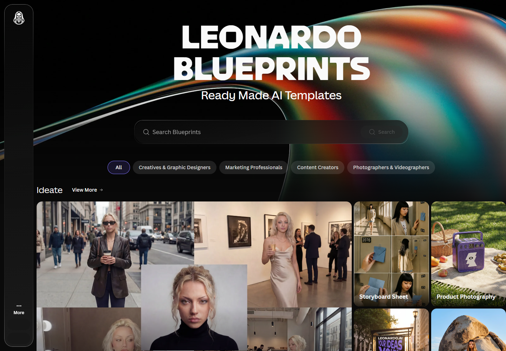

P25-leonardo-e1 · 用户自述
匿名A为技术博客头图、图示转图和文内配图使用付费会员及加额数月；反馈回车触发生成、尺寸/种子设置变化造成返工，还需外部大模型帮助提示。
2026-03左右；相对日期 · 观察：2026-09-10
付款未核验；故障未复现；转交团队回复不是已修复。
Leonardo 的普通用户记录涉及幻想与角色插画，以及博客、促销和个人业务配图。生成与参考控制提供了制作起点，精确姿势、多主体、文字和版式仍常需外部编辑。已确认API服务及一名用户试用线索，持续业务集成规模未知。
| 内容使用者 | 内容供给者 | 付款方 |
|---|---|---|
| 角色和幻想题材生成者、为文章或业务补图的人。 | 分享参数、教程或经验的作者；公开作品不等于平台资源商家。 | 有会员和加额自述；API余额与网页订阅分开，支付者行业分布未知。 |
按题材和控制任务定义，不推定游戏从业者。 · 有2个历史用户点，当前为候选
| 观察点 | 群体占比 |
|---|---|
| 2个可区分用户点 | 未知 |
| 问题 | 具体材料 |
|---|---|
| 任务 | 为DnD、卡牌或个人角色做人物外观、姿态和场景。 |
| 触发 | 需要特定人物细节、战斗关系或一组系列画面。 |
| 希望取得的结果 | 保留设定并减少手动构图和修图。 |
| 困难 | 提示无法稳定控制细部。；多主体、姿势和图生图可能破坏原构图。 |
| 需要的内容 | 参考图、模型适用范围、姿势/边缘控制和失败对照。 |
| 替代方法 | Photoshop合成、Poser/Daz预演和其他生成工具。 |
| 持续使用记录 | B/D有反复尝试与求助，无跨月完成项目或续费证据。 |
| 回访假设 | 连续角色和既有参考材料可能复用。 |
| 付费记录 | 没有核实支付方和金额，不能把Token消耗当现金消费。 |
3个独立任务点；其中1个有培训营销背景。团队采购仍未验证。 · 有用户线索，尚不足充分画像
| 观察点 | 群体占比 |
|---|---|
| 3个可区分用户点 | 未知 |
| 问题 | 具体材料 |
|---|---|
| 任务 | 产出博客头图、文内图、商品宣传或客户需要的视觉材料。 |
| 触发 | 有下一篇文章、推广活动或明确委托。 |
| 希望取得的结果 | 图片经过必要编辑后可放进既有内容。 |
| 困难 | 尺寸、种子或模式变化会造成意外重试。；文字、版式和品牌元素需要外部编辑。 |
| 需要的内容 | 真实简报、输出尺寸、后期步骤、同任务重试成本和正式采用证明。 |
| 替代方法 | 图库、摄影、Canva及手工设计。 |
| 持续使用记录 | A自述使用数月；E自述三年并解释后期；C委托成功只有供给者说法。 |
| 回访假设 | 连续内容更新会反复需要补图。 |
| 付费记录 | A明确会员加额自述；C客户支付与平台支付不同，E续费无凭据。 |
一个API尝试点加官方供给；不是已证实生产客户群。 · 候选画像，持续业务使用资料不足
| 观察点 | 群体占比 |
|---|---|
| 1个可区分用户点 | 未知 |
| 问题 | 具体材料 |
|---|---|
| 任务 | 把生成、抠图或放大放进既有服务。 |
| 触发 | 需要重复调用，或存量API迁移。 |
| 希望取得的结果 | 质量符合应用、成本可预计、迁移平稳。 |
| 困难 | 接口可用不代表输出风格符合需求。；迁移、配额和稳定性需要单独验证。 |
| 需要的内容 | 任务输入输出、兼容限制、失败处理和真实调用成本。 |
| 替代方法 | 其他图像API、本地模型或人工处理。 |
| 持续使用记录 | F只说试过并偏向另一工具；没有业务持续运行证据。 |
| 回访假设 | 真实业务接入后可能持续调用。 |
| 付费记录 | API实际付款和留存未知；网页会员不能代替API采购证据。 |
| 产品提供 | 内容形态 | 如何发挥作用 | 观察结果 | 剩余工作 |
|---|---|---|---|---|
| 参考控制与可训练Elements。 | 参考图、数据集、Element及图像。 | 用具体输入限制生成，再比较和调整。 | B/D仍有细节和姿势失败；官方训练能力存在，未证明本任务被解决。 | 不保证角色精确一致，多主体常需手工合成。 |
能力说明与失败观察
| 产品提供 | 内容形态 | 如何发挥作用 | 观察结果 | 剩余工作 |
|---|---|---|---|---|
| 多模型生成、参考输入与编辑起点。 | 头图、促销图、短视频起始材料。 | 生成多个方向，再选择并在Canva等工具完成版式。 | A用于博客流程；E明确后期；C称委托采用但未有买方证明。 | 可发布品质、节省工时和客户验收仍未独立确认。 |
流程采用自述
| 产品提供 | 内容形态 | 如何发挥作用 | 观察结果 | 剩余工作 |
|---|---|---|---|---|
| API方案和存量迁移安排。 | 调用能力、图像处理结果。 | 由应用发起生成或处理请求。 | F试过API但偏好其他风格；公告只确认迁移供给。 | 没有规模、稳定性、调用后成功或持续付费。 |
尝试与官方供给
匿名A为技术博客头图、图示转图和文内配图使用付费会员及加额数月；反馈回车触发生成、尺寸/种子设置变化造成返工，还需外部大模型帮助提示。
2026-03左右；相对日期 · 观察：2026-09-10
付款未核验；故障未复现；转交团队回复不是已修复。
匿名B用Anime XL做DnD/幻想风人物，反复改提示仍无法改变男性角色眉毛；另一回复者试做后承认该模型下仍难控制。
2024-10；历史 · 观察：2026-09-10
原发帖者计1点；对方试作不新增同任务用户，2024旧模型。
匿名C展示实验图并提供提示/设置，称部分用于委托摄影式图片。
2024-01；历史 · 观察：2026-09-10
供给者自述交付，未取得买方验收；节省金额不采为已证实收益。
匿名D制作怪物与角色对战卡牌，想减少Photoshop和Poser工时；图生图、姿势控制多次失败或改变整个场景。
2024-02；历史 · 观察：2026-09-10
任务和失败为本人自述；没有当前版本复测。
匿名E称使用三年，制作博客、社媒、产品促销和视觉起点，再到Canva修文字、版式和品牌元素。
2026-06-30；页面另显示2026-07-28 · 观察：2026-09-10
作者经营培训且与Canva生态有关；长期使用为自述，不能作客观效率提升。
匿名F说尝试过Leonardo API生成图像，但自己的视觉风格更倾向Midjourney。
2026；相对日期 · 观察：2026-09-10
只是一轮尝试线索；没有调用日志、生产集成或长期付费。
Elements指南把数据集与训练结果分开，可通过Element施加角色/风格并调强度；数据变化需要重新训练才能对应新结果。
2026-02-19；既有正文日期 · 观察：2026-09-10
Legacy与模型兼容边界；不推定公开模型市场或下载权重。
官方方案列个人、团队及API；团队有共同资产和额度等目标，API面向调用。
动态价格页，访问2026-09-09 · 观察：2026-09-09
既有价格页审阅；不列未复核具体金额。
remove.bg API迁移公告描述向Leonardo账户/API体系迁移的安排。
2026-08-28发布，2026-09-01更新 · 观察：2026-09-09
公告证明供给/迁移计划，不证明迁移完成率或收入增长。
Leonardo.Ai · 动态价格页，访问2026-09-09 · 查阅：2026-09-09
审阅既有baseline-segments.json及证据报告所载来源，原页上次读取为2026-09-09；未逐页复核。当前分档与额度机制；模型可用范围有动态调整。
Leonardo.Ai · 2026-08-24更新 · 查阅：2026-09-09
审阅既有baseline-segments.json及证据报告所载来源，原页上次读取为2026-09-09；未逐页复核。只采用其自身累计产出，不采用其对竞品的营销判断。
Leonardo.Ai · 2026-08-28发布，2026-09-01更新 · 查阅：2026-09-09
审阅既有baseline-segments.json及证据报告所载来源，原页上次读取为2026-09-09；未逐页复核。存量API迁移及同一账户额度；不等于已验证转化增长。
Canva · 2024年收购公告 · 查阅：2026-09-09
审阅既有baseline-segments.json及证据报告所载来源，原页上次读取为2026-09-09；未逐页复核。确认业务关系与资源条件；不挪用Canva整体用户和收入。
Reddit公开讨论 · 2026-03左右；相对日期 · 查阅：2026-09-10
正文读取；主帖明确博客任务、付费和多月使用；另一回复只作界面问题佐证。
Reddit公开讨论 · 2024-10；历史 · 查阅：2026-09-10
正文定位读取；DnD幻想人物的眉毛控制问题；回复者尝试后修正原建议。
Reddit公开讨论 · 2024-01；历史 · 查阅：2026-09-10
正文定位读取；作者自述有委托图及分享参数；客户成功及金额没有买方核验。
Reddit公开讨论 · 2024-02；历史 · 查阅：2026-09-10
正文读取；多主体卡牌及Photoshop/Poser后续说明；不采用旁人推测的训练数据事实。
公开独立作者博客（匿名化） · 2026-06-30；页面另显示2026-07-28 · 查阅：2026-09-10
正文定位读取；有培训服务与Canva专家背景，带自我推广；不能当无商业关系的中立测评。
Reddit公开讨论 · 2026；相对日期 · 查阅：2026-09-10
正文读取；与OpenArt B、Midjourney I同一个匿名用户。
Leonardo.Ai · 2026-02-19；既有正文日期 · 查阅：2026-09-10
正文访问与既有正文审阅；Legacy栏目说明；不同模型兼容受限，没有训练实测。
Leonardo公开作品提供提示和参考，Blueprint提供任务输入界面，Collection整理素材。模板输入可见不代表内部模型、提示词与完整流程均已交付。
可以继续操作的一张公开图像。
| 样例 | 可以取得什么 | 后续动作 | 条件与限制 |
|---|---|---|---|
| Commercial Usage 帮助中的公开Feed示例。 | 展示与局部方法参考。 | 文档支持从作品继续修改或用作参考；未操作。 | 不保证附有全部生成素材；帮助中的经营人物属于官方假设示例。 |
带分步输入、预期输出和成本的任务配置。
| 样例 | 可以取得什么 | 后续动作 | 条件与限制 |
|---|---|---|---|
| Product Photography 官方演示。 | 平台内可执行的任务入口。 | 按输入引导使用，输出可继续编辑；不等同导出节点图。 | 现成入口已在帮助中说明，自建及社区分享仍列为后续。 |
允许团队整理同组图像的共享容器。
| 样例 | 可以取得什么 | 后续动作 | 条件与限制 |
|---|---|---|---|
| Creating and Sharing Collections with Your Team。 | 素材管理与协作层，不是教程。 | 可按权限查看、增删或整理；文档支持生成前选入。 | 团队规则不能外推所有免费个人账号；合集不自动记录完整制作过程。 |
来自官方Blueprint帮助的商品摄影示例，不是完成的商品任务。
| 材料部分 | 观察到什么 | 作用分析 |
|---|---|---|
| 对象输入 | 上传商品图。 | 用户提供的是自己的对象，因此示例图再漂亮，也需要检验轮廓、文字和细节是否在新素材上保留。 |
| 意图输入 | 指定商品场景，照片描述为可选项。 | 表单简化了参数，但把任务成败集中到了少量描述是否足以表达用户要求。 |
| 输出承诺 | Blueprint 通用帮助说明会按任务展示输出类型与生成成本；未核商品摄影示例的准确输出数量及全部类型。 | 购买判断需要输出范围与费用；缺少准确输出数量时不应只按模板标题估算。 |
| 结果接续 | 结果可进入编辑、Library及分享路径；原始Blueprint源码并未在此说明中交付。 | 继续改成品与修改生产方法不是同一权限，这决定读者实际学到或能带走什么。 |
低输入门槛不等于高成功率；官方商品示例也不能代表全部Blueprint都是商品工具。
| 可取得或继承 | 还需准备 | 不能直接迁移 |
|---|---|---|
| 公开Feed给图像及提示线索；Blueprint可作为任务入口；团队合集可共享许可范围内的素材。 | 自己的输入、额度和相应权限；用户仍需检查商品是否准确并选择后续编辑。 | Blueprint链接是方法入口，结果只读链接是成品展示；包含输入图的直接社媒分享受限。文档未证明可以复制内部配置或完整跨工具迁移。 |
Leonardo同时维护公开参考作品、任务模板和专业作者合作。生成结果也进入个人或团队素材库。示例供给、方法更新和素材权限分别需要有人负责，公开发帖量无法涵盖全部使用。
LCP 由团队酌情选拔；当前FAQ顶部提示申请暂停，仅可候补。
| 执行与分工 | 触发与节奏 | 运营作用（分析） | 失效条件 |
|---|---|---|---|
| 官方筛选，作者提供创作工作与反馈。 | 常规招募周期未知；不能按仍保留的申请步骤认定已重开。 | 少量作者关系可持续提供作品及产品意见。 | 没有实际接纳率、恢复时间或供稿数量。 |
LCP 成员可在专属Discord或社媒提及品牌分享作品，获得展示机会。
| 执行与分工 | 触发与节奏 | 运营作用（分析） | 失效条件 |
|---|---|---|---|
| 作者供作品；平台决定官方放大。 | 成员发布或分享时触发；没有固定篇数承诺。 | 展示关系有明确接收方，作者不用只等公开Feed偶然推荐。 | 未证明每次都会被选中或取得现金回报。 |
Blueprints 组合方法并引导用户输入；当前仍未开放自建社区Blueprint。
| 执行与分工 | 触发与节奏 | 运营作用（分析） | 失效条件 |
|---|---|---|---|
| 平台供现成入口，用户准备与判断自己的结果。 | 按任务运行；模板更新频率未知。 | 先帮助完成任务，供给可以先由有限维护者承担。 | 不能将现成目录视作已成熟的开放作者市场。 |
团队Collections支持生成前选归档位置，之后批量整理已有结果。
| 执行与分工 | 触发与节奏 | 运营作用（分析） | 失效条件 |
|---|---|---|---|
| 团队成员按权限整理，平台保存素材关系。 | 新一批生成和项目整理时触发。 | 减少结果散落，使后续创作能找到先前材料。 | 没有测量节省时间，也不等于原流程可一键恢复。 |
团队合集可设View、Edit或No Access；LCP成员可退出并失去项目权益。
| 执行与分工 | 触发与节奏 | 运营作用（分析） | 失效条件 |
|---|---|---|---|
| 素材拥有管理权限的人调整共享；平台处理合作资格。 | 共享、权限改变或退出时触发。 | 让使用素材与获得合作待遇各有边界。 | 退出后存量资产及未用额度如何具体处理，资料不足。 |
2026-03-03 FAQ描述的合作机制；现时申请暂停，没有新报名或确认具体成员。
已确认筛选、权益和展示机会；分析上需处理作品许可、资源与反馈，但具体合同未公开。
没有连续交稿、展示采用、作品带来用户或报酬的实际台账。
| 供给者回报 | 参与者回报 | 与付费的连接 |
|---|---|---|
| LCP 给高级订阅、附加资源和早期访问；不据此推定平台按篇付款。 | 普通用户可从公开作品复用提示或参考；团队成员继续使用私有素材也可形成价值。 | Blueprint成本按任务显示，免费账户未必覆盖所有任务；会员资源与合作权益应分开。 |
| 持续工作 | 尚未量化的成本 | 成立条件 |
|---|---|---|
| 维护任务输入和示例，协调作者权益，整理反馈，并处理素材共享。 | 输入照片和要求不同，可能产生额外的模板调整与答疑工作。 | 有人能解释哪些结果合格，并在模型或输入改变后继续检查。 |
Leonardo分别提供免费探索、个人订阅、团队方案和API。Canva的资源与分发，以及remove.bg API纳入统一平台，构成额外业务条件；新社区须另核自身可用资源。
| 付款方 | 收入方式 |
|---|---|
| 个人创作者、需要私密素材和协作的内容团队、把生成与图像处理接入自身业务的开发者或企业。 | 个人订阅及加额、按席位的团队方案、按使用量的 API 与定制合同。 |
当前价格页免费额度按日刷新；付费个人档提供私密创作、更多产量和更完整的资料管理。Essential/Premium/Ultimate月价列为12/30/60美元。付费触发因此包含客户材料的使用方式，而不只是额度不足；是否适合客户项目仍需以条款和实际流程判断。
官方将 Relax 生成限定在选定模型和优先级，第三方模型不当然包含在无限范围内。用户应比较完成一个任务所需的模型、重试与等待，而非把无限理解为所有模型任意使用。推断：这是同时考虑高频创作者和外部推理成本的分层方法。
团队套餐按席位并共享额度，提供团队私密生成；API 提供按量付费、自动加额及定制并发。前者为多人使用与资料管理买单，后者为业务接入和持续调用买单。不能把团队席位数和 API 终端用户相加称为付费人数。
收购公告确认 Leonardo 获得 Canva 资源支持并继续经营；2026年更新说明 remove.bg API 移入 Leonardo，背景移除与其他图像工具可通过同一账户和额度使用。推断：已有任务流量可逐步转向更多服务，但迁移通知并未披露转化率或增量收入。
| 指标 | 披露值 | 期间与对象 | 解释 | 限制 |
|---|---|---|---|---|
| 累计生成图像 | 超过47亿张 | 官方文章2026-08-24更新；具体累计截止日未标；Leonardo 平台累计产出 | 可作为平台生成使用规模的近期资料。 | 不是MAU、独立用户、成功交付或收入；营销比较文章自述未审计。 |
| 累计生成视频 | 超过6400万个 | 官方文章2026-08-24更新；具体累计截止日未标；Leonardo 平台累计产出 | 除图片外已存在视频生成使用。 | 没有长度、模型、成功率和付费比例；无法与其他站视频数量直接比较。 |
| 独立经营结果 | 未公开核实 | 截至2026-09-09；Leonardo收入、MAU与付费人数 | 不能根据Canva整体收入或用户推算Leonardo经营规模。 | 收购方在旧公告中的使用者规模是历史口径，不能补作当期MAU。 |
Leonardo.Ai · 动态价格页，访问2026-09-09 · 查阅：2026-09-09
当前分档与额度机制；模型可用范围有动态调整。
Leonardo.Ai · 2026-08-24更新 · 查阅：2026-09-09
只采用其自身累计产出，不采用其对竞品的营销判断。
Leonardo.Ai · 2026-08-28发布，2026-09-01更新 · 查阅：2026-09-09
存量API迁移及同一账户额度；不等于已验证转化增长。
Canva · 2024年收购公告 · 查阅：2026-09-09
确认业务关系与资源条件；不挪用Canva整体用户和收入。
官方 Blueprints 目录与说明可核；用户标签仍停在含服务条款确认的首次设置，未代为同意，未生成。

模板目录按具体用途与职业组织，帮助用户先判断要做什么。
本图来自公开目录；用户首次设置未完成，未执行模板生成。
来源页面 ↗核对首次使用状态；不代用户同意条款。
未进入工作区，也未提交生成。
已接收生成任务0次。仅使用既有免费资源；没有充值或公开发布。每平台最多 3 次提交，包含重试。
| 阶段 | 用户动作 | 可能遇到的障碍 |
|---|---|---|
| 发现与进入 | 按职业和具体任务找到 Blueprint。 | 先确认输出是图、视频还是两者，以及输入要求。 |
| 第一次做成 | 上传素材，逐步填写场景和补充描述，再生成。 | 效果仍需检查，不满意时进入编辑。 |
| 再次使用 | 从 Library 或 Collection 接着处理下一批素材。 | 持续制作可能一直发生在私人空间。 |
| 贡献给别人 | 分享流程链接或结果查看链接。 | 结果、输入与完整方法的公开范围不同。 |
目录按职业和任务组织，详情按步骤收输入。生成前确认类型和代价，比笼统写“立即创作”更有助于用户决定。
结果归档、方法分享与公开客户素材需要分别处理。未来 MakeNow 的分享不能让用户猜测接收者究竟会得到什么。
官方商业使用和生成帮助确认 Community Feed 及个人 Library 的角色。用户可以从公开作品复用提示或参考，进入生成、放大、编辑或视频等操作，再保存或分享。
因此它既有展示也有工具使用，不应只按外部 Discord 生态理解。具体复制效果和跨模型结果一致性，未通过生成验证。
Creator Program 提供专属社群、订阅资源、提前访问及展示机会，属于筛选后的作者关系。2026 年 3 月 FAQ 明确申请暂停，保留候补；不能将该页存在理解为正在公开招募。
对于多元拾光，这类计划的价值在于专业作者与产品持续反馈，而非只发送一笔资源。作者是否能教会别人、愿否反馈失败，比粉丝数更接近当前供给缺口。
2025 Imagination Fund 要求在限定周期完成作品及幕后过程等材料，申请窗口已经结束。这可以说明资助怎样转成可传播、可学习的内容，不能视为当前可申请权益。
用专业作者做出的展示证明工具可能完成某事，但仍可能包含高水平人工整理。多元拾光的案例验收需要同时看成品与别人能否复做。
免费资源有日周期条件，付费资源涉及月度、结转或增购规则；部分第三方模型与慢速使用有额外限制。不同资源不能用一个“免费无限”的句子概括。
公开与私密也和账号计划相关，FAQ 对删除生成图片存在订阅资格说明。对于涉及客户素材的人群，是否愿意公开过程可能直接影响内容供给；未实际测试删除或私密设置。
官方 Blueprint 帮助以商品摄影解释分步输入，支持查看预期输出与消耗，结果可继续编辑并存入 Library。它区分 Blueprint 链接与结果只读链接，并说明涉及输入图时限制直接社媒分享。
同一帮助页仍把自建和向社区分享 Blueprints 标为后续能力。目录中的具名作者模板，不代表每个用户都能公开投稿。
| 做法 | 依据 | 投入 | 调整条件 |
|---|---|---|---|
| 作者与产品写清输入、输出、可改项和成本范围，运营用另一份素材检查步骤。 | 示例素材与真实用户素材的差异，往往决定能否完成。 | 合作报酬包含一次用户试做后的修改，运营维护例图和失败反馈。 | 用户同一方法能完成第二批素材，才逐步标准化。 |
| 做法 | 依据 | 投入 | 调整条件 |
|---|---|---|---|
| 社区优先展示已获许可的方法和示例，不要求每位使用者公开成品。 | 用户愿意复用却不愿公开，可能源于客户素材边界，而非缺少价值。 | 需要通过任务续用和成果采用衡量，公开发帖数可能不高。 | 用户明确希望把方法交给别人，再细分分享结果、参考与源画布的能力。 |
官方 · 2026-02-16
产品、资源及账户条件
官方 · 未标绝对更新日
Community Feed 与公开内容使用语境
官方 · 未标绝对更新日
生成与操作路径
官方 · 访问 2026-09-08；显示相对更新时间
不同资源与订阅边界
官方 · 2026-03-03
当前暂停申请、候补及作者权益
官方 · 2025-09 至 10 月申请；已结束
历史作品与过程材料要求
官方 · 未标绝对更新日
隐私与账户条件，未实操
官方 · 页面显示两周前更新；访问 2026-09-09
分步任务、成本、分享边界与自建待开放
官方 · 2026-02-18
生成前选择归档位置与继续管理